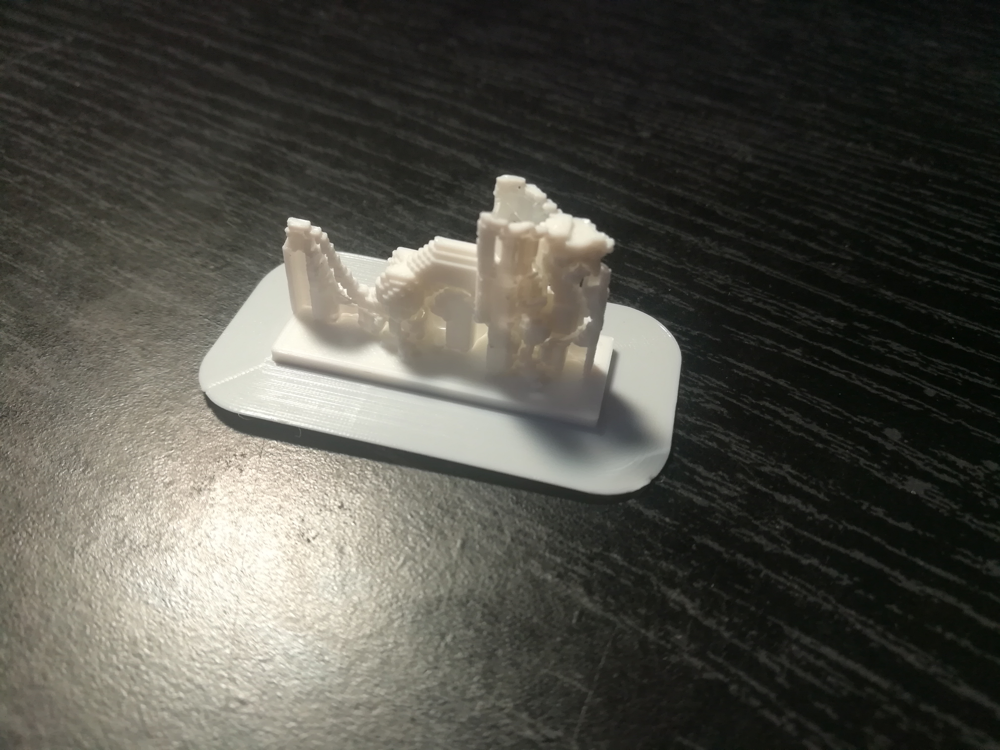
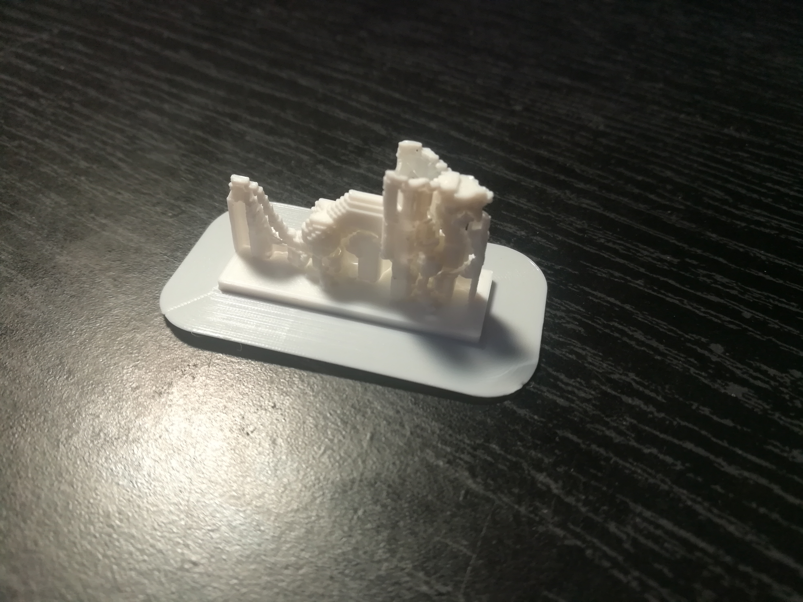

With the help of a 3D printer, I was able to turn a digital creation into a physical object.
Minecraft is a popular video game that involves the use of cubes to build virtual structures. Because the game takes place in an imaginary world, of course, it is impossible for the digital creations to become reality...or is it? By using a third-party software, I was able to transfer a digital creation into a physical object.
With the help of a 3D printer, I was able to turn a digital creation into a physical object.
